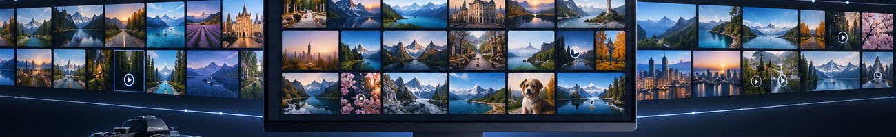
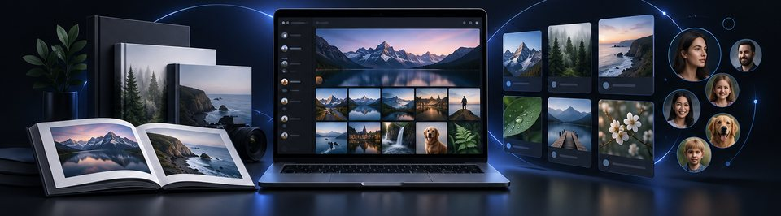
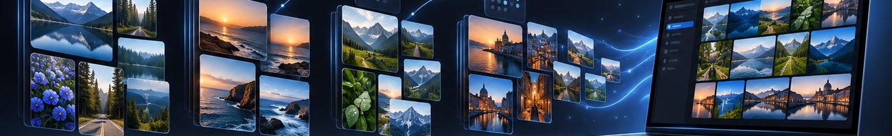

01 · 🗂 업무 사진첩
모든 사진을 날짜순으로, 종류별로 걸러 보기
- 사진첩 폴더의 모든 사진·동영상을 날짜순으로 한 화면에 — 주말이 아닌 날도 빠짐없이.
- 종류로 바로 거르기:
사진동영상문서·영수증스크린샷사람동물
- PDF·Word로 공유하고, 필요하면 Mac의 사진 앱에도 보이게 넣을 수 있어요.

현장·작업 사진, 영수증과 문서, 스크린샷까지 날짜와 종류로 한 화면에. 사진을 복사하지 않는 링크 모음으로 거래처·프로젝트별로 나누고, SD 카드·폰·외장하드는 다시 읽어 확인한 뒤 옮깁니다. 모든 작업은 검증 가능한 기록으로 남습니다.
같은 앱입니다. 처음 열 때 가족과 프로페셔널 중 고르고, 언제든 위쪽 🎨로 바꿀 수 있어요. 사진 폴더는 그대로입니다.
프로페셔널 보기의 메뉴 순서대로 소개합니다. 사진을 고르고 분류하는 일은 Mac 안의 AI(Apple Vision 등)가 합니다.


과장 없이 적었습니다. 전체 목록은 앱의 「ⓘ 정보」 → 데이터·AI 안내에 있어요.
사진은 내 Mac과 연결한 외장하드에만 있습니다. 종류 분류·자동 모음·얼굴 묶기는 Mac 안의 AI(Apple Vision)가 하고, 얼굴 데이터는 사진첩 폴더에만 저장돼요.
SD 카드·폰 백업, 외장하드 정리, 작업 기록은 Mac과 연결한 기기 안에서만 처리하며 파일 내용·이름을 보내지 않아요.
내가 고를 때만, 내 Google 계정과 주고받습니다. Drive에는 고른 파일이 올라가요.
누를 때만 고른 사진 몇 장의 축소본과 '언제·어디서' 요약(동네 이름까지)이 내 Claude 계정으로 갑니다. 원본·파일 이름·GPS 좌표는 보내지 않아요.
Baryon Labs는 기능을 몇 번 썼는지만 익명으로 받아요. 「ⓘ 정보」에서 보낼 내용을 보고 끌 수 있습니다.
Mac 사진 앱에서 iCloud 사진을 켜 두었다면 넣은 사진이 내 iCloud로 올라갈 수 있어요(사진 앱 설정을 따름).
AI 분류와 얼굴 묶기는 추정이라 틀릴 수 있어요. 중요한 자료는 확인 후 쓰세요. 업무용(회사·사업장)으로도 무료로 쓸 수 있어요. 재배포·판매만 안 돼요 — 자세한 건 이용 허락(라이선스)을 보세요.
위의 Mac용 다운로드를 누르고, 받은 파일을 더블클릭하세요.
열린 창에서 「주말 사진첩」 아이콘을 옆의 Applications 폴더 위로 옮기면 설치됩니다. 처음 열 때 🗂 프로페셔널을 고르세요.
"확인되지 않은 개발자" 안내가 나오면 시스템 설정 → 개인정보 보호 및 보안 맨 아래의 그래도 열기를 누르세요. "손상되었기 때문에 열 수 없습니다"라고 나오면 터미널에 아래 한 줄을 붙여 넣고 다시 여세요.
xattr -dr com.apple.quarantine "/Applications/주말 사진첩.app"
위의 Windows용 다운로드로 받은 WeekendAlbum-1.15.0-Setup.exe를 더블클릭하세요. 관리자 권한은 필요 없고, 내 계정에만 설치됩니다.
Windows의 PC 보호 창이 뜨면 추가 정보를 누른 뒤 실행을 누르세요. 아직 인증서 서명이 없는 새 앱이라 처음 한 번만 나옵니다.
시작 메뉴(또는 바탕화면)의 주말 사진첩을 열고 가족·프로페셔널 중 고르세요. 사진은 사진(Pictures)\주말 사진첩 폴더에 모입니다. Windows 10에서 창이 비어 있으면 Microsoft Edge WebView2 런타임을 설치하고 다시 여세요.
동영상 장면·클립과 폰 백업을 쓰려면 PowerShell에 아래 줄을 붙여 넣어 무료 도구를 설치하세요. 얼굴로 묶기·사진 내용 AI 분류·사진 앱 연동은 Mac에서만 됩니다.
winget install Gyan.FFmpeg
winget install Google.PlatformTools